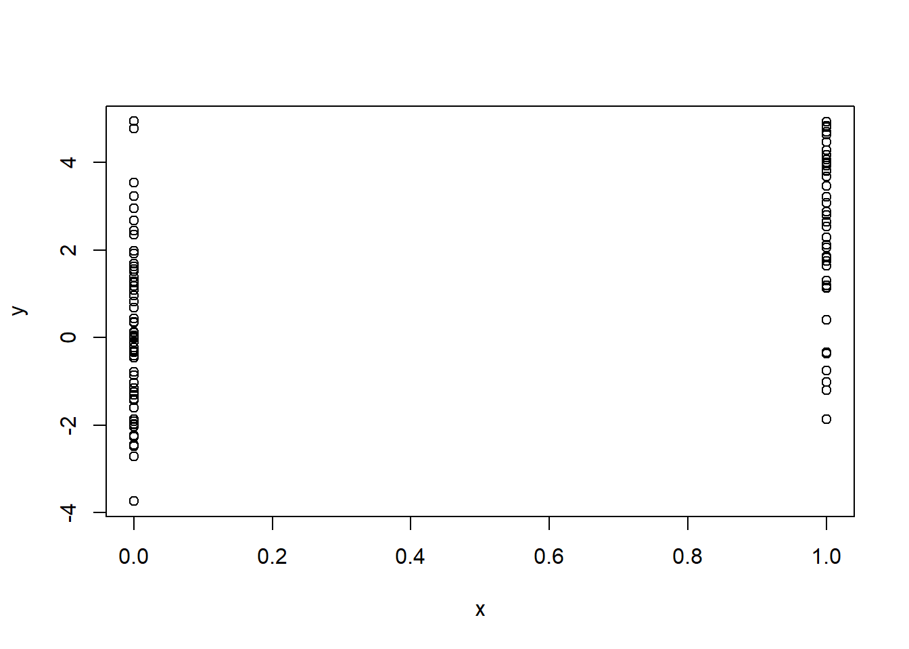

Chapter 7 week 4: Simulation and modeling
proliferer in R a tool that allows you to check the performance of your functions and would help you optimize
The str() function gives a quick examination of R objects functions and data perrty usefull to have a general idea of what an specific expression is.
str(str)
library(datasets)
head(airquality)
str(airquality)
s <- split(airquality,airquality$Month)
str(s) 7.1 simulation
because R is statistics orientated it has many functions used for creating distributions. Each type of distribution like normal, Poisson, etc has asociated the following prefixes that specify different outcomes.
- d: density
- __r:__random number generation
- p: cumulative
- q: quantile
The following are some examples.
rnorm: normal distribution given a mean and a standar deviation
dnorm: Probability density
pnorm: Cumulative distribution fro a normal distribution
*rpois: generates a random Possion distribution given a defined rate
## 5 6 7 8 9
## 65.54839 79.10000 83.90323 83.96774 76.90000Temperature<- airquality$Temp
model <-rnorm(153,mean(Temperature),sd(Temperature))
plot(density(Temperature))
Figure 7.1: air density

Figure 7.2: air density
R produces random number that are not entirely random, instead they are made through a pseudo random generator, an algorithm that will map the output to a list of values with a determined probabilistic distribution. A seed will determine the behavior of the algorithm, any seed will always map to the same numbers. It is important to be able to reproduce the exact same results, so the set.seed() function is used to ensure that the random values generated stay the same.
## [1] " set seed to 3"## [1] -0.9619334 -0.2925257 0.2587882 -1.1521319 0.1957828## [1] "seed not set "## [1] 0.03012394 0.08541773 1.11661021 -1.21885742 1.26736872## [1] " set seed to 3 again"## [1] -0.9619334 -0.2925257 0.2587882 -1.1521319 0.1957828We want to create a linear model of the form
\[\begin{equation*} y= \beta _1 + \beta_2 x +\epsilon \tag{7.1} \end{equation*}\]


7.2 sampling
7.3 Code Optimization
R profiler examines how much does it take to run a piece of code